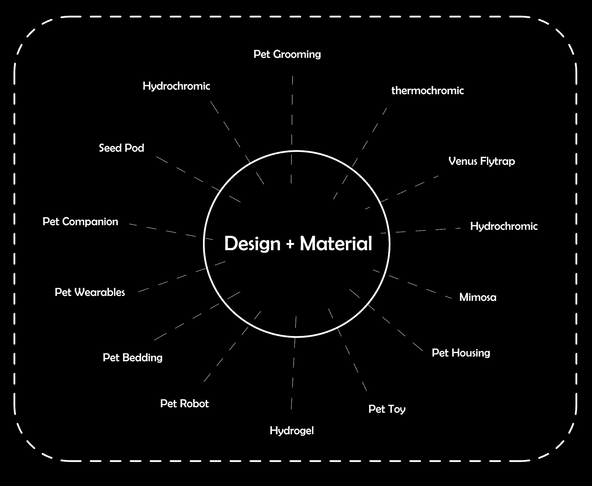
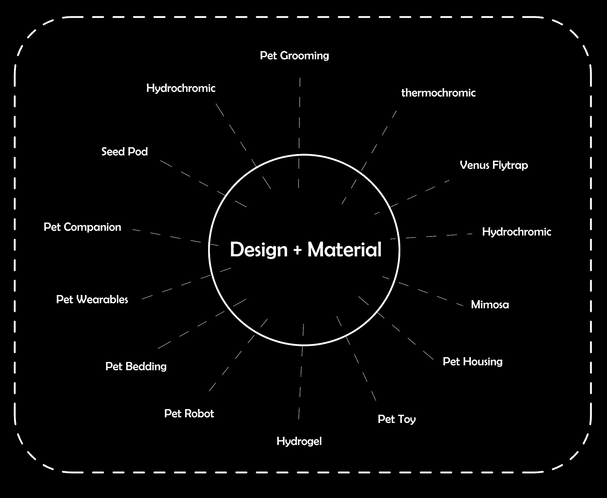

As technology becomes increasingly integrated into everyday life, pet care products are also evolving to be more intelligent and responsive. Yet, many existing designs focus on automation or monitoring, rather than creating deeper, more intuitive interactions between pets, their environments, and their owners. This project explores how smart and responsive pet systems can adapt to pets’ changing needs—enhancing comfort, wellbeing, and emotional connection in more natural and meaningful ways.
The global smart pet care market is rapidly expanding, expected to surpass USD 6 billion by 2030. Most existing solutions focus on automation, monitoring, and remote control. While these products enhance convenience for owners, they rarely address pets’ physical comfort or emotional states in real time.
Our project explores a new generation of responsive and adaptive pet systems—products that can sense, react, and self-adjust to environmental and behavioral changes in a more natural way. This emerging direction shifts from simple control-based systems to intelligent, bio-inspired, and empathetic experiences.
Most current devices require user control or app-based input. There is an opportunity for self-reactive systems that function independently and intuitively.
Existing Solutions focuses on repeating routines. A next-generation pet system could recognize environmental cues like temperature and humidity, adjusting solutions accordingly.
Current smart pet products emphasize data metrics, which often remain abstract to users. A responsive design instead uses tangible cues—color changes or surface texture to make the pet’s needs visible.
The smart pet market has optimized convenience but overlooked emotion. Designing systems that respond to pets’ states can foster empathy, strengthening the bond between pets and owners.
How might we create smart and responsive pet products that intuitively adapt to pets’ needs, creating more natural and meaningful interactions?

 


Gandhi and Thompson's foundational work introduces smart materials that respond dynamically to environmental stimuli.
Read More
Examines integration of material info into design, inspired by biological paradigms to create adaptive architectural forms.
Read MoreExplores AI as a collaborative partner in design, enhancing creativity and supporting spontaneous insight generation.
Read More
Delves into design solutions inspired by nature’s time-tested strategies for sustainable and efficient innovations.
Read MorePresents new materialist perspectives challenging traditional views of matter and agency in social and political contexts.
Read More
Applies Norman’s emotional design theory to a smart cat feeder, integrating aesthetics, remote interaction, and a fish tank.
Read MoreAn AI smart collar tracking pets’ vitals, activity, and emotions, providing alerts, GPS, nutrition guidance, and a community platform.
Read MoreSurvey of modern pet-care technologies including smart collars, feeders, cameras, telemedicine, and robotic toys.
Read More


Principle: Detects body temperature and heart-rate changes; the collar color shifts when the pet is excited, anxious, or relaxed.
Meaning: Visualizes the pet’s emotional state, helping owners better understand their pet’s wellbeing.
Purpose: Placed near a pet’s water or food bowl to indicate when water is empty or food becomes damp.
Principle: Uses a hygroscopic swelling material that changes shape or color as humidity varies, triggering a signal to remind the owner to refill or replace.
Logic: The material slightly bends when the pet enters, automatically conforming to the body’s shape.
Function: The bed gently adjusts its form to accommodate the pet’s different resting positions.
Function: When a pet’s paw or skin becomes abnormally wet, hot, or slippery, the mat reacts and records the condition.
Helps owners identify potential health risks such as skin irritation or environmental discomfort.
Shark-skin microstructures with antibacterial and anti-slip features for hygiene and comfort.
Lotus-leaf-inspired hydrophobic coating reduces residue and promotes healthier eating.